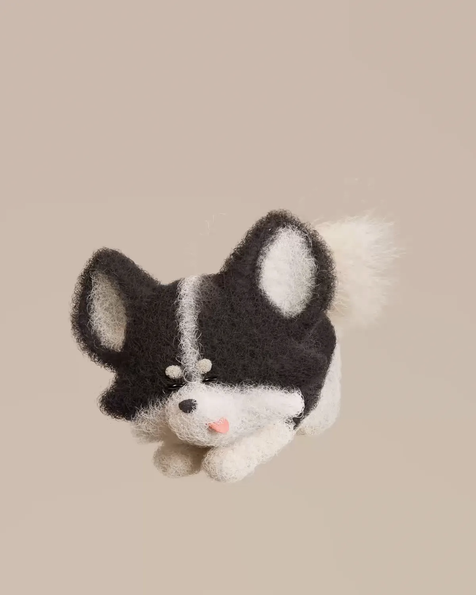
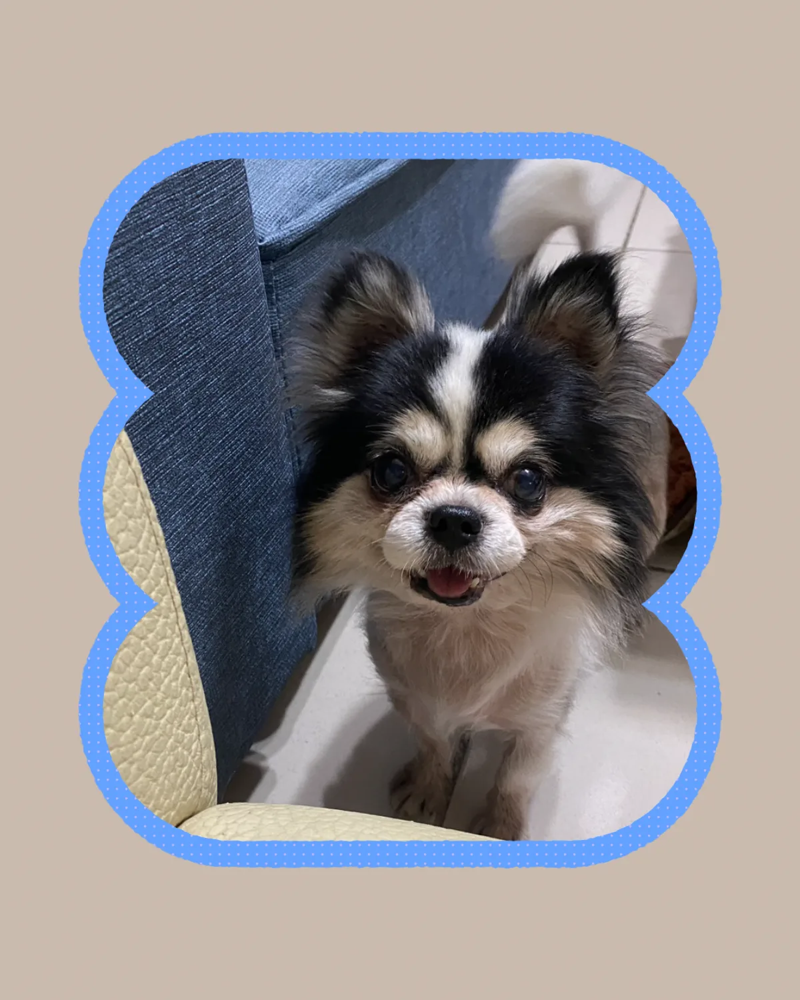
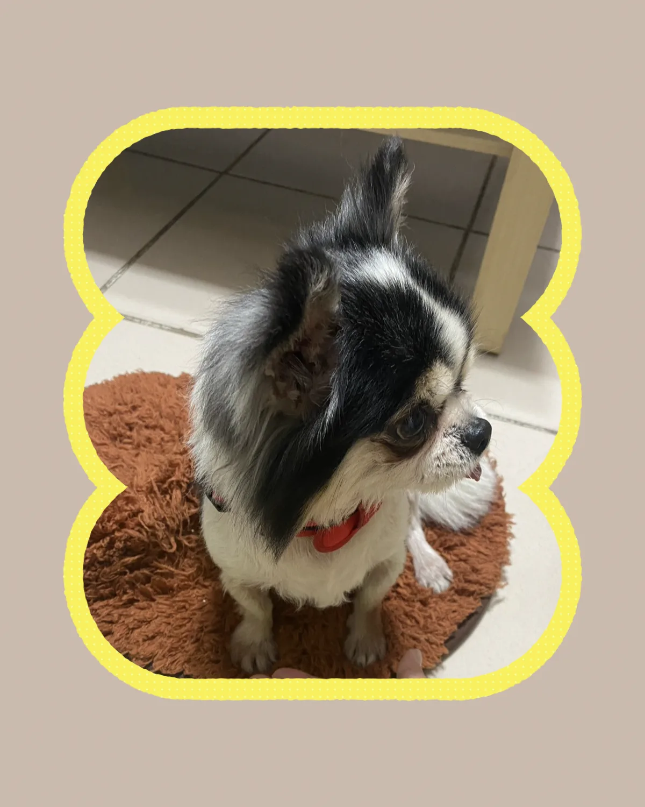
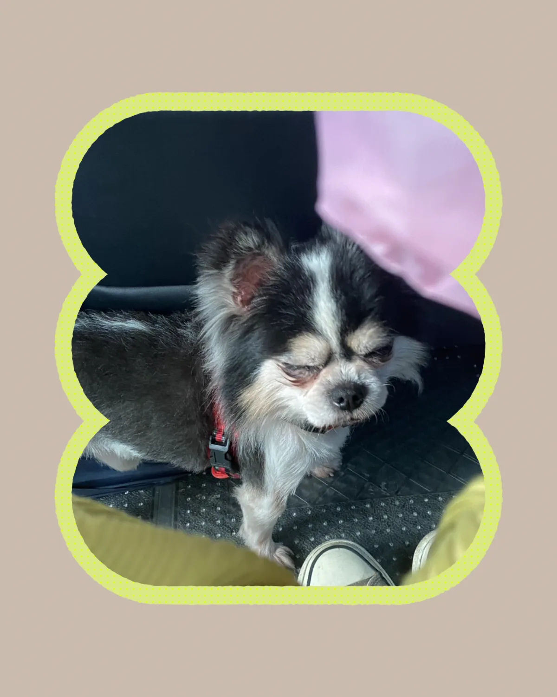
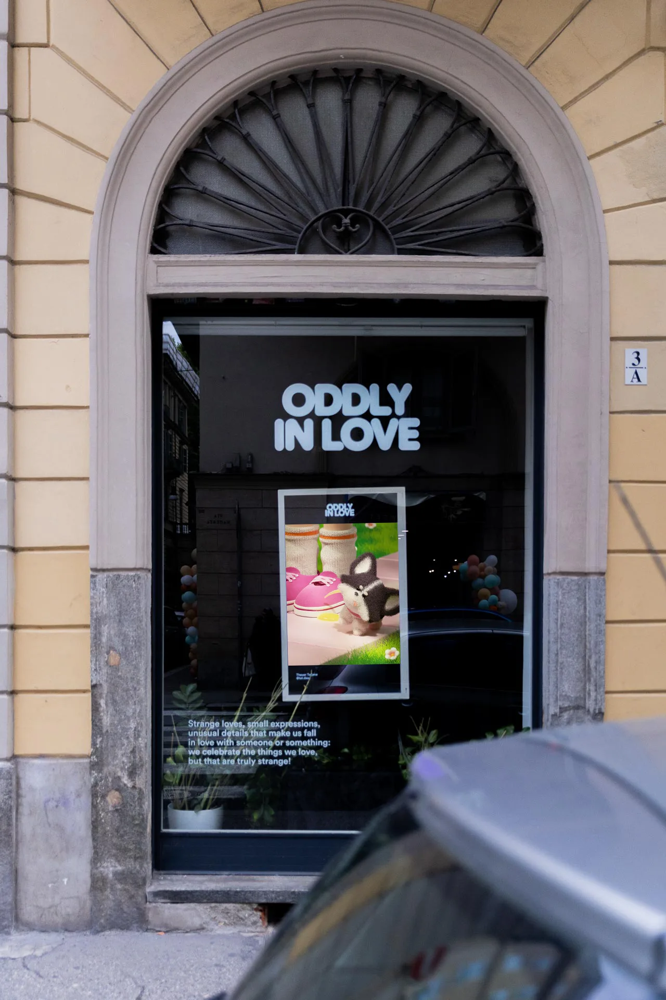

Tommy’s Oddly Love
He is Tommy. Tommy is a Chihuahua and was also the first pet dog I ever had. He was a shy and quiet little boy, and he was my best companion. I had him from when I was 10 years old until last year, when I was 26.
When I was about 13, I was standing on the street when Tommy suddenly peed on my foot!
People often say that dogs pee to mark their territory. I like to think of it as his own unique way of showing love.
He passed away last year. When I think back on all the love he gave us, I want to record that funny and touching memory to thank him for growing up with me. I’m using the way I know best to preserve it through my own creations.
- Type
- Personal work
- Year
- 2025

He is Tommy.



